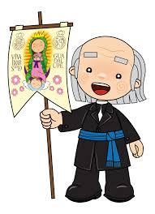
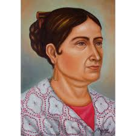
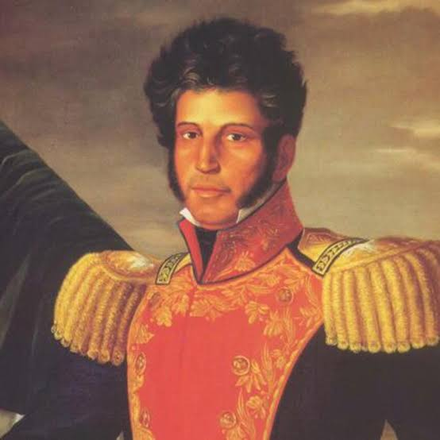
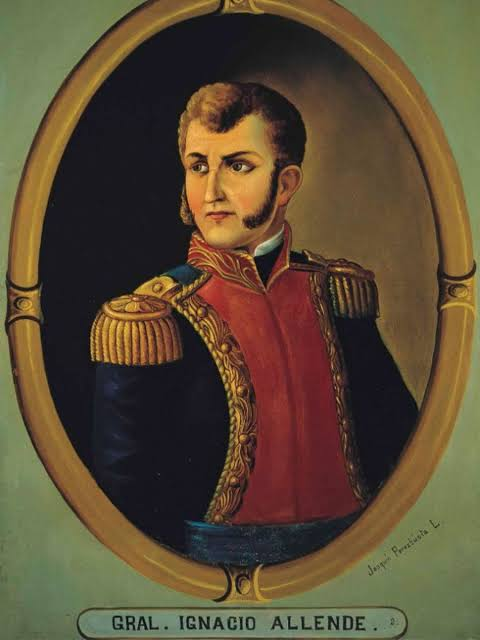

Personajes Ilustres

Miguel Hidalgo y Costilla
Padre de la Patria
Líder intelectual y religioso que inició el movimiento insurgente.

José María Morelos y Pavón
Siervo de la Nación
Estratega militar que redactó Los Sentimientos de la Nación, documento clave para las primeras instituciones del país.

Josefa Ortiz de Domínguez
La Corregidora
Pieza clave de la conspiración de Querétaro que avisó a los insurgentes sobre el descubrimiento de la trama.

Vicente Guerrero
Consumador de la Independencia
Líder insurgente que mantuvo viva la resistencia en el sur y acordó el Abrazo de Acatempan para consumar la independencia.

Ignacio Allende
Capitán Insurgente
Capitán del ejército virreinal que se unió a la causa insurgente y asumió el liderazgo militar de las primeras fases de la guerra.